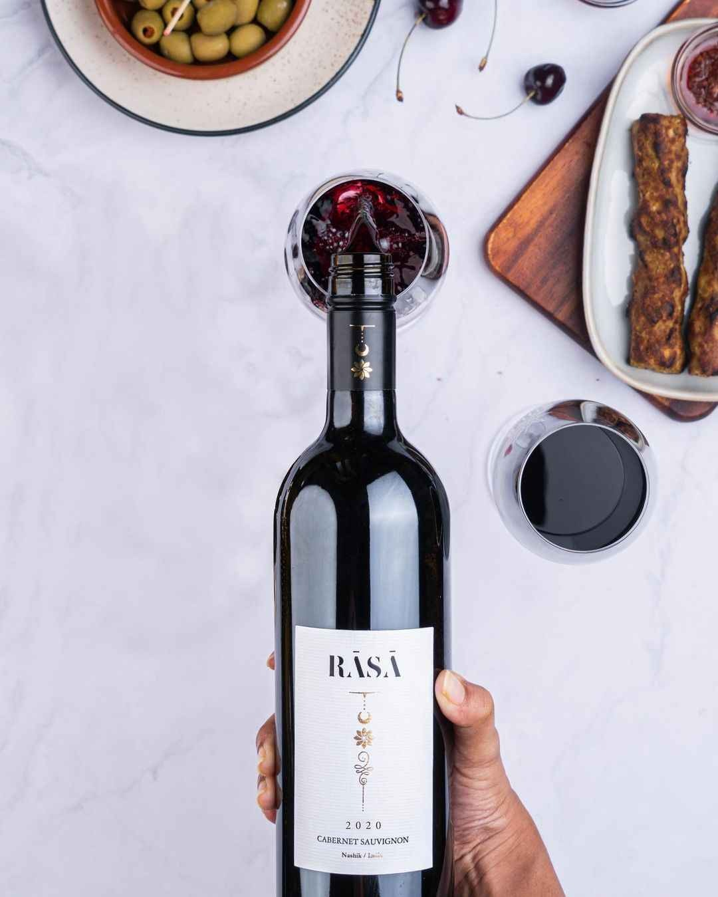
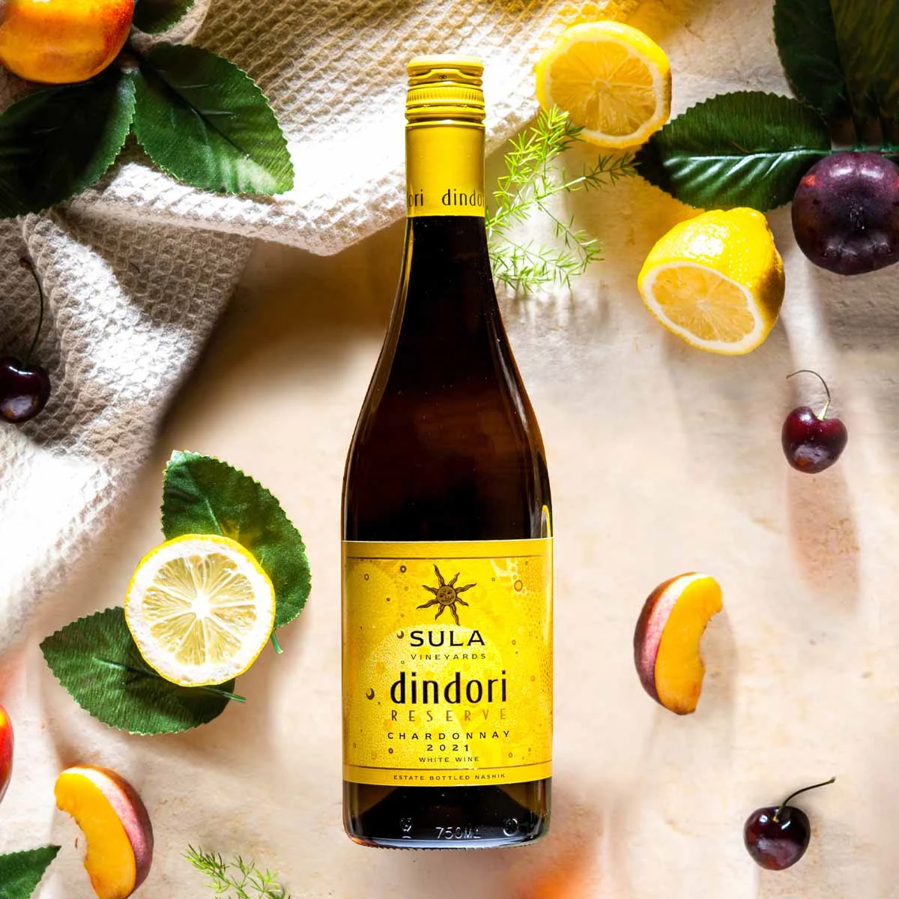
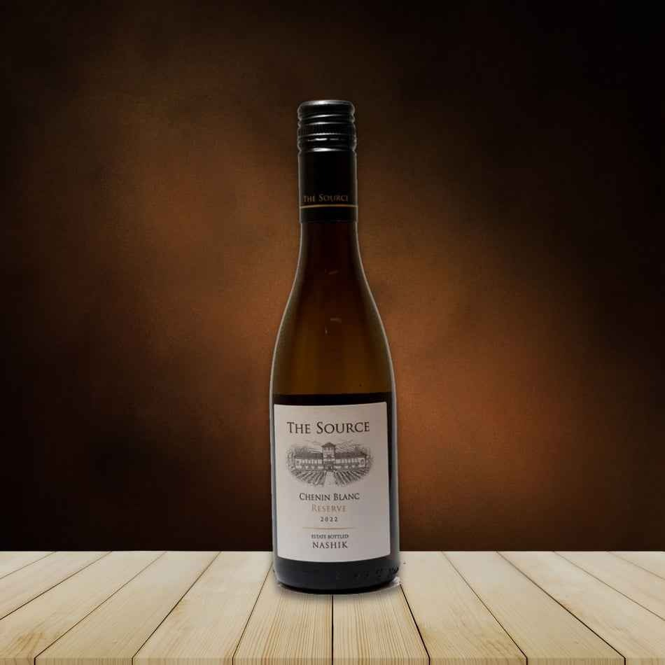

<div id="portfolio">
    <div class="container">
        <h1 class="sub-title"><b>OUR RANGES</b></h1>
        <div class="work-list">
            <div  class="work">
                
                <div class="layer">
                    <h3><b>RASA</b></h3>
                    <p>The RASA concept for wines has been created with the idea to produce, through artisan winemaking and very selective triage, the best red wines India has ever made.</p>
                    
                </div>
            </div>          
            <div class="work">
                
                <div class="layer">
                    <h3><b>DINDORI</b></h3>
                    <p> Sula's Dindori Reserve highlights our winemakers and their endeavors, usingtheir winemaking skills and tools asartisans with Shiraz, Viognier and mostrecently Chardonnay.</p>
                    
                </div>
            </div>
            <div class="work">
                    
                    <div class="layer">
                        <h3><b>THE SOURCE</b></h3>
                        <p>With 'The Source'  wine portfolio, Sula has focused on select vineyard sites, crafting memorable and tasty Sauvignon Blanc and Grenache Rose. Wines made for 'The Source' are made with craftsmanship. The Sauvignon Blanc is aged in French Oak barrels texture and elegance.</p>
                        
                    </div>
            </div>
        </div>
        
    </div>
</div>
